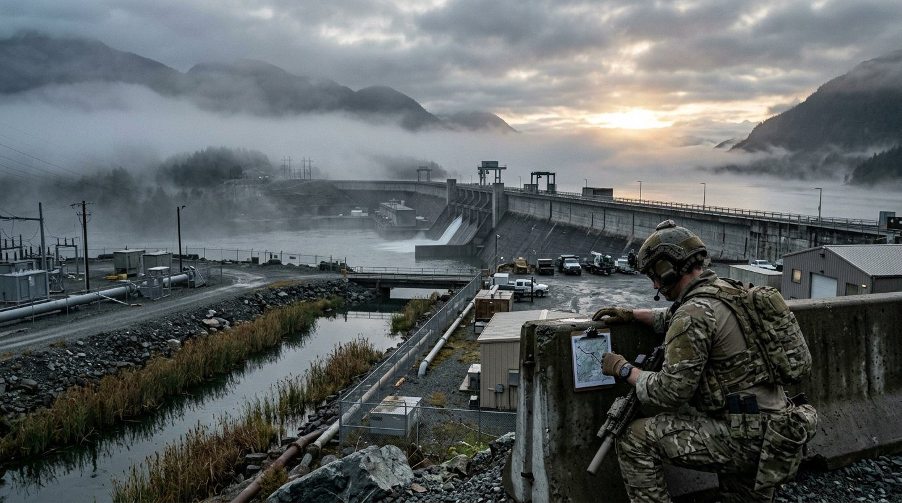
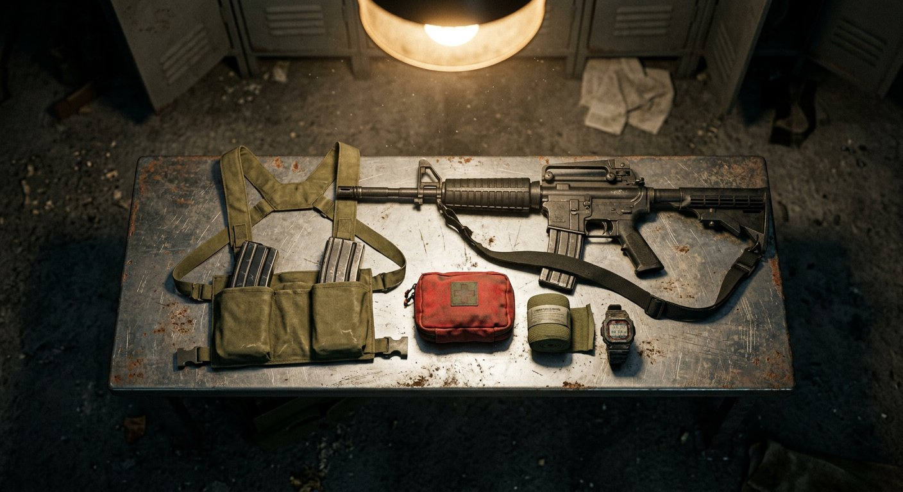

Commencer sans brûler son équipement
Operations et Warfare ne demandent pas les mêmes réflexes. On commence donc par la boucle d’extraction, avec du matériel qu’on accepte de perdre, puis on ajoute les couches une par une.
La boucle, en une phrase
Tu entres sur une carte avec du matériel acheté, tu remplis un sac, et tu ressors par une sortie. Ce qui est dans le sac au moment de la sortie t’appartient. Ce que tu portais sur toi et qui n’est pas dans le coffre sécurisé reste sur ton cadavre si tu meurs.
Cette règle explique presque toutes les décisions qui suivent. Elle explique aussi pourquoi les joueurs expérimentés partent souvent avec du matériel modeste et des munitions correctes : le risque se mesure en valeur perdue, pas en élégance du kit.

Ce que tu gardes, ce que tu perds
Le coffre sécurisé est la seule chose qui survit à une mort. C’est une petite grille d’emplacements, et son intérêt ne vient pas de sa taille mais de l’ordre dans lequel tu l’utilises : tout objet de valeur y entre à la seconde où tu le ramasses, sans attendre d’avoir trouvé mieux.
Le reste se perd en bloc : arme, armure, sac, munitions de réserve, soins non consommés. Un joueur qui part avec deux armes double donc sa perte et divise son entraînement. Sauf cas particulier, un fusil de précision en arme principale, où un second pistolet mitrailleur rend service à courte distance, une seule arme suffit pour apprendre.
- Ce qui reste dans le coffre : cartes d’accès, objets de valeur, munitions haut de gamme de réserve, kit de réparation.
- Ce qui disparaît avec toi : tout le reste, y compris le butin que tu venais de ramasser.
- Ce que tu récupères quand même : l’expérience et les récompenses de mission déjà validées, plus les tickets d’équipement distribués pour repartir.
L’équipement des premières parties
Les guides francophones qui traitent du sujet convergent sur une fourchette de 100 000 à 150 000 Tekniq pour un kit de départ en difficulté facile. L’idée n’est pas de « bien s’équiper » mais de s’équiper assez pour survivre aux PNJ sans offrir un butin intéressant aux joueurs croisés.
Un casque simple, une protection basse classe, un gilet tactique vert, deux seringues, une petite chirurgie, des munitions vertes. L’armure de meilleure qualité viendra des missions et des tickets, pas d’un achat impulsif. Un point souvent oublié : le matériel acheté d’occasion, avec une durabilité entamée, coûte sensiblement moins cher pour un usage identique tant qu’on ne compte pas l’encaisser dans un duel prolongé.
Sur les munitions, la tentation est de prendre du bleu tout de suite. C’est cher et rarement décisif en facile, où l’essentiel des rencontres est constitué de PNJ. Les munitions de base suffisent à les traiter ; la réserve de qualité se garde pour les parties où l’on croise vraiment des joueurs.
Les soins, dans l’ordre
Delta Force distingue les blessures et les saignements, et les deux ne se soignent pas avec le même objet. Un saignement continue de vider la barre pendant que tu fais autre chose : c’est la priorité. Les blessures se traitent ensuite, et la chirurgie sert aux cas sérieux, une jambe cassée qui t’empêche de courir, par exemple.
Emporter six objets de soin et n’en utiliser que deux est une perte sèche à chaque raid. Deux seringues, une chirurgie et une dose anti-saignement couvrent la majorité des situations quand on évite les combats inutiles.
Warfare d’abord, ou Operations d’abord ?
Plusieurs guides recommandent de passer quelques heures en Warfare avant de s’attaquer à l’extraction. La raison est simple : en Warfare, mourir ne coûte rien, et on y travaille la visée, les distances et les opérateurs sans risque financier. L’inverse est plus douloureux, et beaucoup de nouveaux joueurs y laissent leur réserve en une soirée.
L’autre avantage est la progression partagée : une arme débloquée en Warfare reste disponible en Operations, et l’expérience d’arme gagnée d’un côté sert de l’autre.
La checklist des dix premières heures
Les cases se cochent dans l’ordre que tu veux, et elles restent cochées d’une visite à l’autre :
—
La suite logique : monter le compte sans se ruiner, puis calculer ce qu’un raid rapporte réellement.
La peur de perdre son stuff, et comment on s’en sort
C’est le vrai blocage des premières semaines, plus que la visée. Trois façons de le traiter, toutes tirées de fils de discussion de joueurs qui sont passés par là.
La phrase qui dédramatise. Ton équipement ne t’appartient pas, tu l’utilises jusqu’à ce qu’il passe au joueur suivant. Ce n’est pas une formule de motivation : dans un jeu à essuyage de saison, le matériel que tu gardes au château finit obsolète sans avoir servi.
La méthode par palier. Utilise ce que tu peux perdre sans que ça change ta soirée. Les tickets d’équipement existent pour ça : mourir avec du matériel gratuit coûte zéro. Monte d’un palier quand tu enchaînes trois sorties vivant, pas quand tu te sens prêt.
L’exposition volontaire. Plusieurs joueurs racontent la même chose : c’est en jouant seul ou en acceptant des fights déséquilibrés qu’ils ont arrêté d’avoir peur, parce que le cerveau finit par comprendre que la perte est récupérable. À faire en facile, avec du matériel bon marché.
Six erreurs qui coûtent un raid
- Sprinter partout. Courir annonce ta position à toute la zone. Marche par défaut, cours seulement quand tu es déjà repéré ou à découvert.
- Fouiller avant d’avoir nettoyé. Le nombre de joueurs qui meurent l’inventaire ouvert au-dessus d’un corps est considérable. Le combat d’abord, le butin ensuite.
- Sprinter dans la zone d’extraction. Les trente secondes avant la sortie sont le moment le plus dangereux du raid, parce que c’est là que les autres attendent. Approche par un angle inattendu, ne cours pas.
- Ignorer le coffre sécurisé. Ce que tu ne veux surtout pas perdre y entre tout de suite, avant de fouiller la pièce suivante.
- Entasser au lieu de vendre. Une cache pleine ne rapporte rien. Vends ce qui ne sert à aucune mission en cours, tu rachèteras au besoin.
- Tester un build directement en raid. Le pas de tir existe pour ça : recul, vitesse de visée et temps de rechargement ne se lisent pas sur une fiche.
